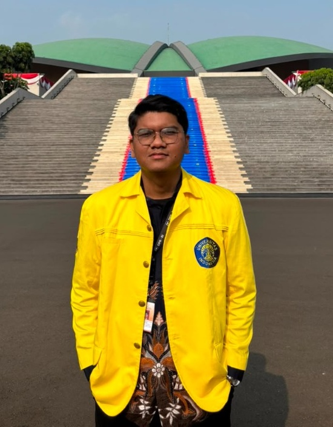
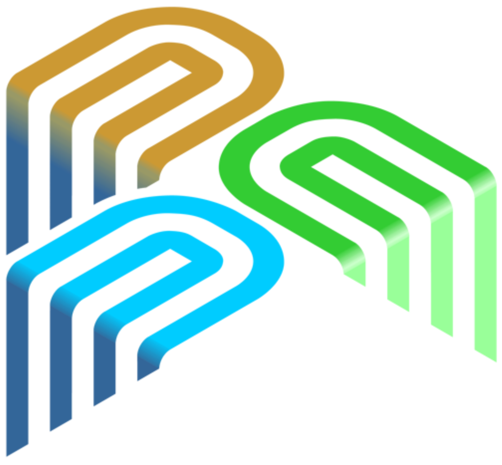

Riandika Rafael Jaya Pangaribuan
Data Analyst & Business Intelligence
Di balik setiap deretan angka selalu ada cerita berharga, dan fokus saya adalah mengubah insight tersebut menjadi keputusan strategis yang berdampak nyata. Saat ini saya menempuh semester ke-7 di jurusan Statistika Universitas Indonesia, memadukan pemahaman teori yang kokoh dengan eksekusi praktis di bidang data analytics.
Pengalaman nyata dalam analisis data dan tata kelola TI di lingkungan institusi publik turut mengasah keahlian saya dalam mengolah dataset yang kompleks, merancang pemodelan prediktif, serta memahami alur logika bisnis secara tajam.
Berbekal rasa ingin tahu yang kuat dan antusiasme untuk terus belajar, saya selalu terpacu menghadirkan solusi inovatif di titik temu antara data dan pemecahan masalah.
Pendidikan
Universitas Indonesia
Mahasiswa AktifS1 Statistika (Departemen Matematika / FMIPA)
Depok, Jawa Barat, Indonesia
SMAN 68 Jakarta
AlumniMIPA (Matematika dan Ilmu Pengetahuan Alam)
Jakarta Pusat, DKI Jakarta, Indonesia
SMPN 30 Jakarta
AlumniSekolah Menengah Pertama
Jakarta Utara, DKI Jakarta, Indonesia
Skills & Abilities
Python
Data Analytics & Automation
R
Statistical Computing
Excel
Spreadsheet & Modeling
SQL (MySQL)
RDBMS & Query Optimization
Soft Skills
Pengalaman Magang
Statistician Intern
Dewan Perwakilan Rakyat RI (Pusat Teknologi Informasi)
- check_circle Memproses dan menganalisis 4.000+ baris data aspirasi publik terkait RUU dan undang-undang melalui text cleaning, visualisasi word cloud, dan analisis sentimen (menghasilkan proporsi 40,8% positif, 23,3% netral, dan 35,9% negatif).
- check_circle Mengembangkan model Regresi Logistik Ordinal untuk menguji pengaruh variabel makroekonomi (Inflasi, PDB, dan Tingkat Pengangguran Terbuka/TPT) terhadap sentimen publik pada tiga klaster RUU (Polhukam, Ekonomi, dan Sosial-Budaya), membuktikan bahwa substansi legislasi merupakan faktor determinan utama dibanding indikator makro.
- check_circle Merancang skrip automated web scraping untuk memproduksi dataset publik berskala besar, mencakup 84.332 baris penyelarasan kode wilayah BPS–Kemendagri hingga tingkat desa/kelurahan, 15.035 baris data program nasional (Radar MBG), serta ekstraksi data tabular dari PDF Satu Data Indonesia.
- check_circle Menstandardisasi metadata geospasial menggunakan CatMDEdit, menyusun Manual Book resmi, serta memfasilitasi sesi Bimbingan Teknis (Bimtek) dalam peluncuran Website SMART DPR RI dan platform partisipasi publik Simasleg.

Data Analyst Intern
Kementerian PPN / Bappenas (Direktorat Pengembangan Data dan Pemerintah Digital)
- check_circle Mengelola pemrosesan, pembersihan data (data sanitization), dan validasi dataset sosial-ekonomi skala besar pada portal DTSEN (Data Terpadu Sosial Ekonomi Nasional) guna mendukung perumusan kebijakan publik berbasis bukti (evidence-based policy) serta inisiatif digital government.
- check_circle Menerapkan teknik analisis statistika untuk memonitor alur kerja data (data workflows) secara sistematis dan mengidentifikasi serta menuntaskan anomali data demi menjamin presisi metrik pembangunan nasional.
- check_circle Menyusun laporan teknis komprehensif berdasarkan sintesis temuan analitik dan menyelesaikan seluruh target data deliverables tepat waktu guna memperkuat keandalan operasional sistem perencanaan pembangunan nasional.
Pengalaman Project
Sistem Basis Data Perbankan
Perancangan arsitektur basis data relasional perbankan (skema 3NF) terintegrasi Python OOP Repository Pattern dan antarmuka Web GUI dengan tata kelola keamanan akun, kontrol transaksi, serta audit trail kepatuhan perbankan real-time.
- check_circle Normalisasi 3NF pada 6 entitas (Nasabah, Akun, Transaksi, Admin, AkunAdmin, LogAktivitas) dengan constraint integritas referensial dan regex NIK.
- check_circle Implementasi Python OOP dengan Repository Design Pattern memisahkan layer Model, Table, dan Database guna efisiensi query dan keamanan.
- check_circle Web GUI interaktif dengan proteksi brute-force (auto-lockout 3x), validasi PIN 6-digit, pelacakan mutasi, dan modul ekspor log audit admin.
"Kita tahu sekarang, bahwa Allah turut bekerja dalam segala sesuatu untuk mendatangkan kebaikan bagi mereka yang mengasihi Dia, yaitu bagi mereka yang terpanggil sesuai dengan rencana Allah."
ROMA 8 : 28